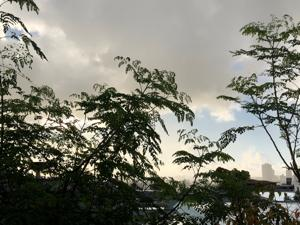
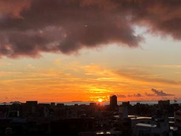

うるがいの話 ある日
最新: 本屋【うるがいの話 ある日】とは 一日だけのプログです
『うるがいの話』の最新一日だけのプログで、通信料が少なく経済的だ。カニの画像をクリックすると全ての日付が載る『うるがいの話』サイトを表示します
|
|
【うるがいの話】 うるがい(ｳﾙｶﾞｲ urugai)とは、『もずくがに』の名前でとても大きくなります。 |
|---|---|
|
|
【カミマヤーの話】 猫のことを方言でマヤーといいます。カミマヤー（kamimayaa）とは、神の猫のことです。 |
|
【たながぁの音楽】 たながぁ（ﾀﾅｶﾞｰ tanagaa）とは手長えびのことで、何種類かあり大きいのは車 エビぐらいになります。 |

|
【ぶながぁの話】 ぶながぁ(ﾌﾞﾅｶﾞｰ bunagaa)とは、赤い髪の毛、赤い身体、そして身長は１ｍ２０ｃｍ ぐらい、川の蟹を食べているの目撃された。場所は沖縄県国頭郡大宜味村のと ある村僕の隣近所に住んでいる爺さんから、聞いた話です。 |
|
|
【ギーマの話】 ギーマ(giima)とは、山原の里山に咲くスズランに似た、 花を付けます。実は食べられます、 気が付くと口の周りが紫になっています。 |
2022年08月06日 (土）本屋
21:11
 
伊達雅彦『傷だらけの店長 それでもやらねばならない』の解説より引用
あなたはこの本を、どのようにして手に入れたのだろう？アマゾンのようなネ
ット通販か、いつも利用している駅近辺の大型書店か。なかには図書館で借り
たという人もいるだろう。あるいはブックオフ？いえ電子版です、という人も
遠からず増えるかもしれない。
いまや本を買う方法は、多彩で便利になった。相対的に、かつて代表的だった
「近所の本屋で買う」という人は、減っていくことになる。
ハイ、図書館で借りて読みました。傷だらけの書店店長（２０００年、店長就
任、２００９年、書店退職）は最後は任された店が閉店になった事を契機に退
職し、最後はハローワークへ通うノンフィクションである、面白く一気に読ん
でしまった。私が、社会人になりたての頃までは、本屋は沢山あった。国際通
りにもそこそこあったが、今は一軒も見当たらない（多分）。
２１時０６分 ビットコインの総資産 ￥９、０５４↑